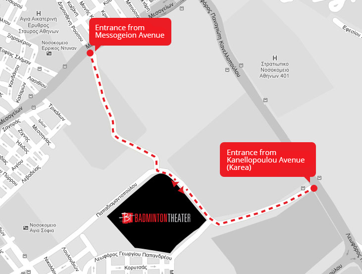

Badminton Theater
Surrounded by a park near the east outskirts of Athens the EuRuKo 2013 venue is a stunning theatre built for the 2004 Athens Olympic Games. Access to ‘Badminton Theatre’ is easy and its indoors as well as outdoors ambience immaculate. The acoustics are pristine and the stage is a whopping 30m x 15.5m x 18.5m space backed by amazing audio-visual tech.
The Venue
-

PUBLIC AREA
The theater entrance opens into the spacious box office lobby which maintains the industrial feel of the building facade. A great asset of the theatre is the double tier foyer that distributes more than 1,500 meters of open space. The two levels are connected with wide stairwells and elevators for convenient access to all entrances of the main hall. Opulent, modern, spacious, sunny and fresh in appearance, the foyer areas have been designed to feel warm and inviting to the thousands of people it comfortably hosts and with consideration of access for people with physical impairments.
-

STAGE
The performance area of the stage measures 30 meters width by 18 meters depth with a 15.50 meter height providing ample room for spectacular events. It is equipped with advanced theater technology including a ΒΑΤΑLPHA computer controlled fly system with 46 flying pipes, all the basic lighting instruments, 200 ADB dimmers, Congo ETC lightning console, 5 led screen for subtitles and video projectors. The stage is designed to facilitate easy access to all the trucks carrying theatre equipment.
-

SOUND
Particular attention has been devoted to the acoustics of the theater’s stage and auditorium, with the reverberation time being under 1.1 seconds average. The sound amplification and distribution for the auditorium is provided by the German audio expert company d & b Audiotechnik using the J Series, a state-of-the-art line array system with an even sound distribution to the auditorium (±2 db). The FOH sound console is the incomparable digital 96 channel MIDAS XL8.
How To Get Here
-
By Metro
You depart at "Katehaki" station (Line 3 - Aigaleo - Doukissis Plakentias - Aerodromio), and you head towards 401 Hospital located on Katehaki Avenue. After the second traffic lights in a row, you enter Goudi park from the pedestrians' entrance which is located near the fence of Ministry of Public Order and Citizen Protection. You continue moving straight forwards, passing the iron gate at the end of the park, where there are signs which lead to Badminton Theater. It's worth mentioning that relevant signs exist also in Katehaki Avenue and Mesogion Avenue.
View Larger Map -
By Bus
There is no bus line that comes outside badminton building. Most of them reach the metro station or Mesogeion avenue. It's useful to notice that Google Maps support directions for public transportation, so feel free to use it.
From Police school - Mesogeion avenue- 046 (MOYSEIO-ELLINOROSON)
- A5 (AKADIMIA - AG. PARASKEVI - ANTHOYSA)
- B5 (ST. LARISIS - L. ALEXANDRAS - AG. PARASKEVI)
- Χ95 (SYNTAGMA - AEROL. ATHINON (EXPRESS)) - Ticket 5€
You depart at bus stop "Police School" («Σχολή Αστυνομίας», pronounced Scholi Astynomias) on Mesogion Avenue and you turn on your right facing the center of Athens. A few meters after, you enter the park (the entrance is opposite of Ministry of Development and Errikos Dynan Hospital). From there, the signs will guide you to the entrance of Badminton Theater.
- 036 ST.KATECHAKI-ST.PANORMOY-GALATSI-KYPSELI (KYKL.)
Departing on "Afetiria - St. Katehaki" bus stop on Mesogion Avenue
- 404 ST. ETHN.AMYNAS - ST. CHALANDRIOY
- 402 ST. KATECHAKI - POLYDROSO
- ST. NOMISMATOKOPEIO-NEA ZOI - ST. DOYK. PLAKENTIAS
Departing on "Afetiria" bus stop on Mesogion Avenue
- 418 ST. ETHN. AMYNAS - SCHOL. CHOLARGOY (KYKLIKI)
- 416 ST. ETHN. AMYNAS - CHOLARGOS (KYKLIKI)
- A5 AKADIMIA - AG. PARASKEVI - ANTHOYSA
- B5 ST. LARISIS - L. ALEXANDRAS - AG. PARASKEVI
Departing on "St. Katehaki" bus stop on Mesogion avenue
Then, you head towards 401 Hospital located on Katehaki Avenue. After the second traffic lights in a row, you enter Goudi park from the pedestrians' entrance which is located near the fence of Ministry of Public Order and Citizen Protection. You continue moving straight forwards, passing the iron gate at the end of the park, where there are signs which lead to Badminton Theater. It's worth mentioning that relevant signs exist also in Katehaki Avenue and Mesogion Avenue.
-

By Car (free parking)
- Coming from Mesogion Avenue, you head towards Katehaki Avenue with direction to Kareas. While on Katehaki Avenue, when you meet the 4th traffic lights in a row you turn right entering the Goudi Park. You should continue moving straight forward till you find the signs which will guide you to Badminton Theater.
- Coming from the southern suburbs of Athens via Karea Avenue and Katehaki avenue with direction to Mesogion Avenue, at the junction of Papagou you turn left in order to enter the Goudi Park. You should continue moving straight forward till you find the signs which will guide you to Badminton Theater.
- Coming from eastern suburbs of Athens via Attiki Odos (exit Y1 Katehaki) with direction to Mesogion Avenue, at the junction of Papagou you turn left in order to enter the Goudi Park. You should continue moving straight forward till you find the signs which will guide you to Badminton Theater.
Private vehicles can park in the open and free-of-charge parking spots around the theater. Before, during and after the event, there will be personnel in the parking areas who will guide drivers accordingly.